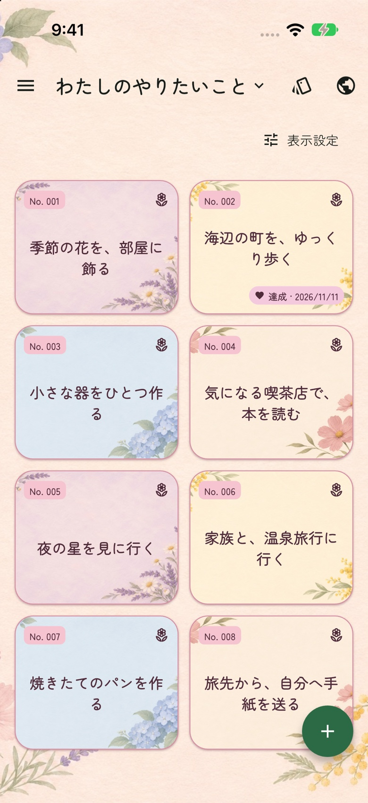
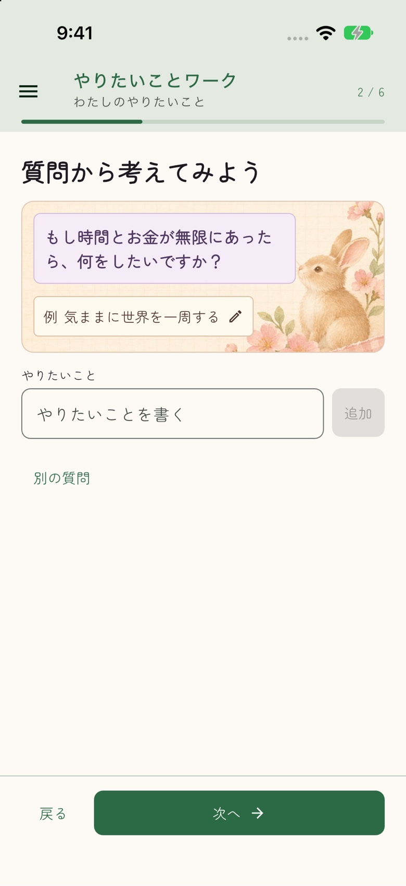
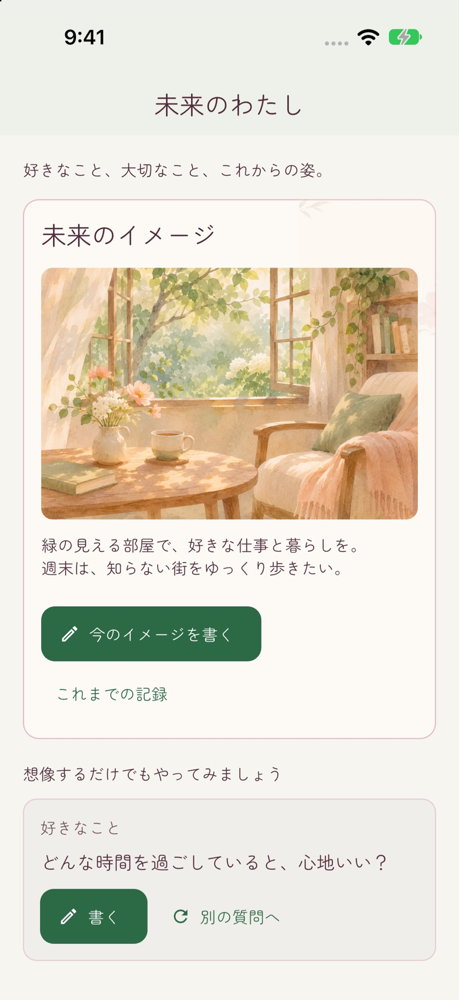
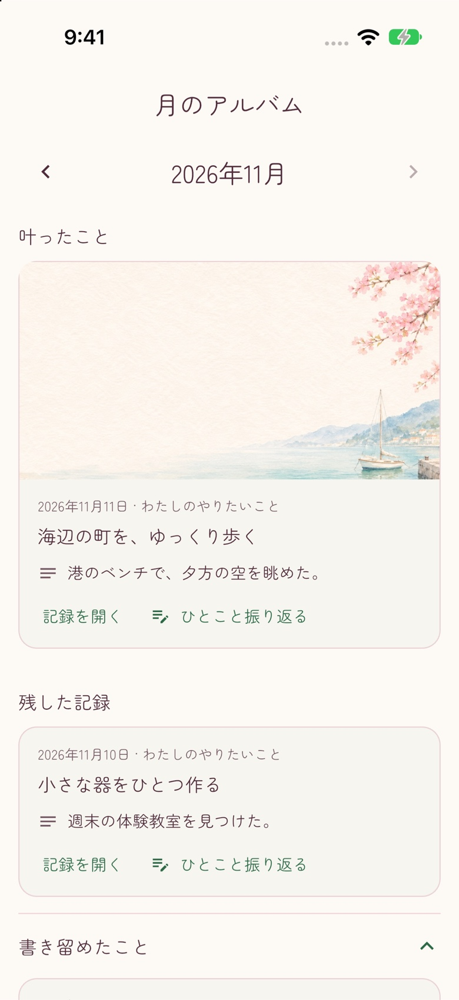
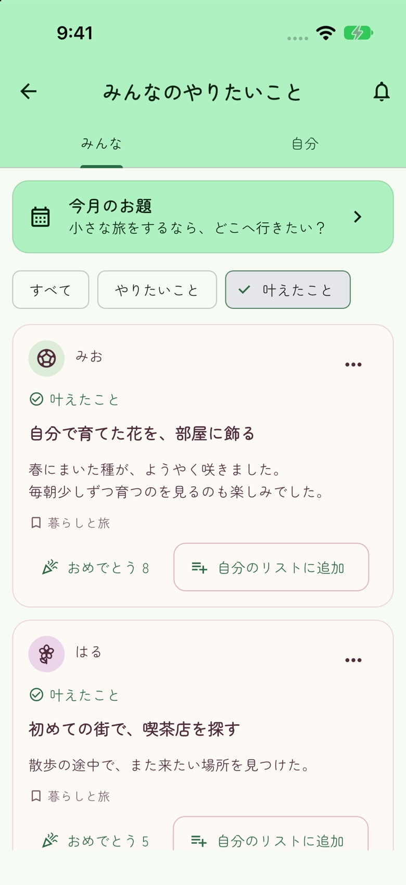

基本機能
無料
やりたいことの記入・達成、写真とメモ、未来のわたし、振り返り、バックアップと復元、基本の着せ替え。コミュニティへの公開や反応も利用できます。
 やりたいこと100
やりたいこと100
わたしのやりたいことリスト
いつか行きたい場所も、ふだんの小さな楽しみも。
好きなカードに残して、ワクワクしよう。


100個の前に、ひとつから。
朝の喫茶店、読みたかった本、会いたい人。思いついた順に書き留めて、好きな柄で並べてみる。リストを開くたび、次にやってみたいことを思い出せます。
質問やプリセットをヒントに、やりたいことを書き出す。
好きなカードの柄や背景、色を選ぶ。
できたことや、そのとき感じたことを残す。
01 / 見つける
いきなり100個思いつかなくても大丈夫。質問に答えたり、用意された候補から気になるものを選んだり。自分の言葉で、やりたいことを増やせます。
「もし時間とお金が無限にあったら、何をしたいですか？」
好きなことや大切にしたいことも、「未来のわたし」に残せます。

02 / 自分らしくする
シンプルに書く日も、シール帳のように飾る日も。カードと背景、テーマ色を組み合わせて、リストの雰囲気を変えられます。


掲載の3つの柄は有料デザインの一例です。買い切り、またはプレミアム契約で利用できます。無料の基本デザインも用意しています。
03 / これからを思う
数年後にどう過ごしていたいか。まだ答えが決まっていなくても、今の気持ちを書き留められます。写真やアプリのイラストを添えて、あとから見返すことも。
「未来のわたし」の回答は端末に保存され、そのまま公開されることはありません。

04 / 見返す
達成の記録に写真やメモを添えて。月のアルバムでは、叶ったことや残した記録を月ごとに振り返れます。途中の一歩も、大切な記録になります。

少し、誰かの力を借りたいときに
今月のお題や、みんなのやりたいことから新しいヒントを。達成したことは、公開したいものだけ共有できます。気になったやりたいことは自分のリストへ。
公開は任意です。ひとりで使うだけでも、リストや振り返りの機能を利用できます。

使い方に合わせて
基本機能
やりたいことの記入・達成、写真とメモ、未来のわたし、振り返り、バックアップと復元、基本の着せ替え。コミュニティへの公開や反応も利用できます。
好きな柄を買い切り
カードと対応する背景をまとめたデザインパック、追加フォントを用意。購入した内容は、プレミアムを解約しても利用できます。
プレミアム
広告非表示、対象の着せ替え・背景・追加フォント、ラベルの一括整理、独自リストの追加・管理を利用できます。
価格と購入内容はアプリ内のストア画面で確認できます。買い切りパックに広告非表示は含まれません。
ひとつからはじめられます。質問やプリセットを使って、思いついたときに少しずつ増やせます。
自分のリストが自動で公開されることはありません。「みんな」に共有したいときに、公開するカードを自分で選びます。
アプリのバックアップ機能で記録を書き出し、復元できます。自動で端末間同期する機能ではありません。購入の復元は購入したストアで行います。
好きなカードを選んで、自分のリストをはじめましょう。